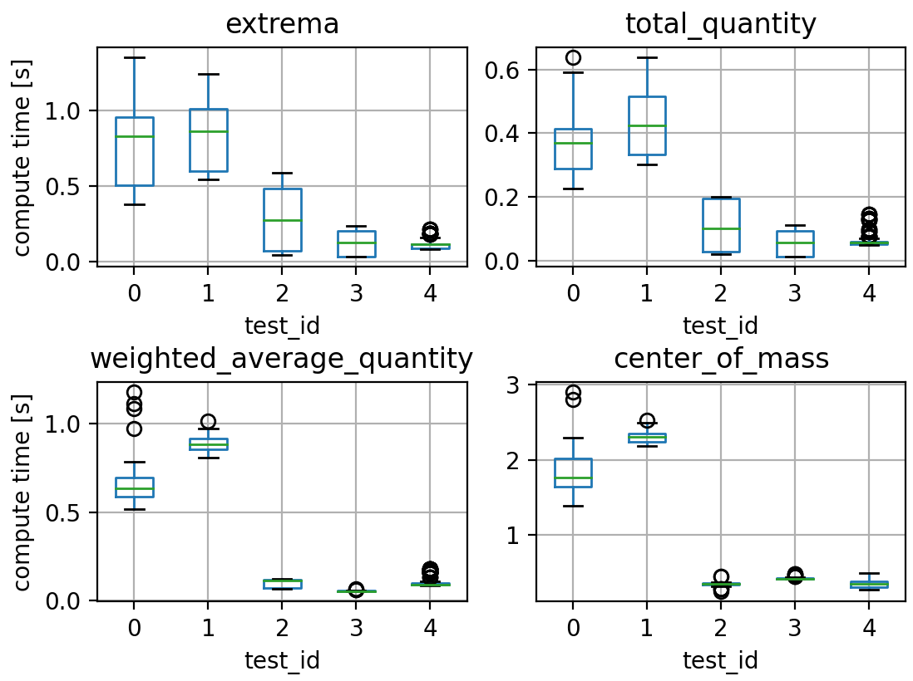
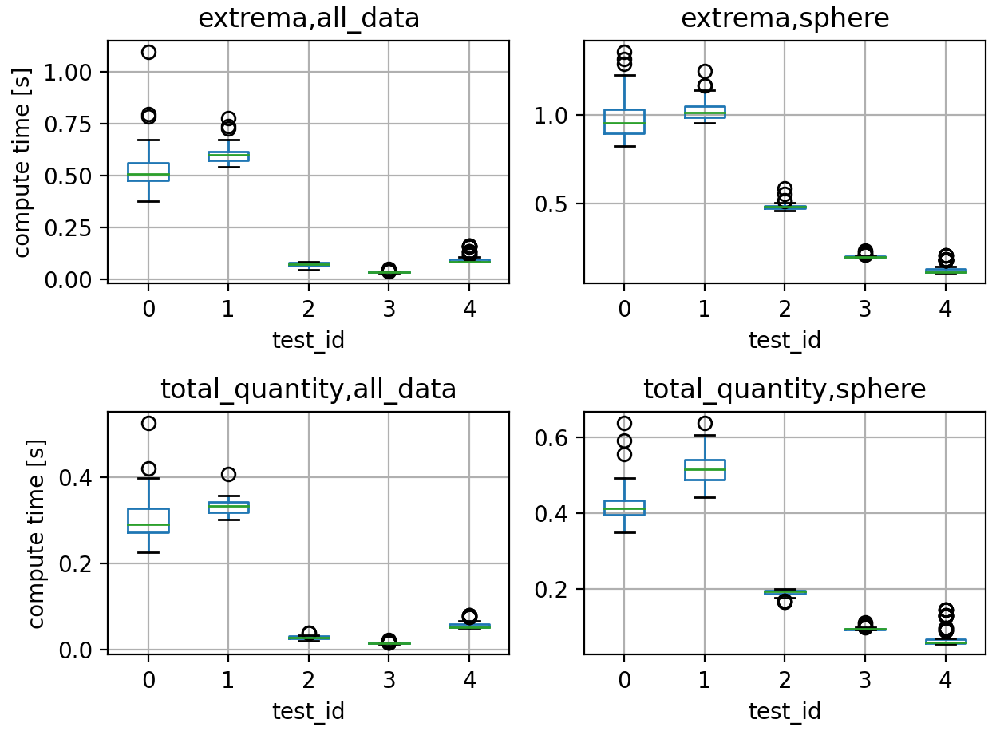

A Daskified yt : using data¶
Much of the power of yt lies in what happens to data after it is read in. Many of the operations are designed to interface with the chunk iterator described in the previous section so that calculations can be applied to chunks separately and then aggregated without loading an entire data array into memory.
daskified derived_quantity calculations¶
Some of the simpler yt operations are defined by the derived_quantities class, which registers quantities to datasets. For example,
import yt
ds = yt.load_sample("snapshot_033")
sp = ds.sphere(ds.domain_center, 0.8)
sp.quantities.extrema([("PartType0", "Density"), ("PartType0", "Temperature")])
returns the max/min values for each field. Other quantities include operations for calculating weighted averages, spatial locations of extrema values, angular momentum and more. All of these operations work within yt’s chunking context with process_chunk reduction operations applied to each chunk and then aggregated.
direct dask-array approach¶
Given that the daskified particle reader described in the previous section can return a delayed unyt_dask array, it is straightfowrd to reduce the code complexity of the derived_quantity calculations with standard dask operations. Consider finding the current class for finding the extrema of a field:
class Extrema(DerivedQuantity):
# <<<< docstring deleted >>>>>
def count_values(self, fields, non_zero):
self.num_vals = len(fields) * 2
def __call__(self, fields, non_zero=False):
fields = list(iter_fields(fields))
rv = super().__call__(fields, non_zero)
if len(rv) == 1:
rv = rv[0]
return rv
def process_chunk(self, data, fields, non_zero):
vals = []
for field in fields:
field = data._determine_fields(field)[0]
fd = data[field]
if non_zero:
fd = fd[fd > 0.0]
if fd.size > 0:
vals += [fd.min(), fd.max()]
else:
vals += [
array_like_field(data, HUGE, field),
array_like_field(data, -HUGE, field),
]
return vals
def reduce_intermediate(self, values):
# The values get turned into arrays here.
return [
self.data_source.ds.arr([mis.min(), mas.max()])
for mis, mas in zip(values[::2], values[1::2])
]
The superclass DervideQuantity’s __call__() method will iterate over the chunks, calling process_chunk for each one to find each chunks min/max value. Those min/max values are then agreggated with the reduce_intermediate function. But when our particle IO returns a unyt_dask array, we do not need to explicitly loop over chunks and just call .min() and .max() on our dask arrays. Our modified class assembles a list of delayed actions:
class Extrema(DerivedQuantity):
# <<<< trimmed >>>>
def _get_delayed(self, fields, non_zero):
if non_zero:
dl = []
for field in fields:
data = self.data_source[field]
msk = data != 0.
dl.append((data[msk].min(), data[msk].max()))
else:
dl = [(self.data_source[field].min(), self.data_source[field].max()) for field in fields]
return dl
def __call__(self, fields, non_zero=False):
return super().__call__(fields, non_zero)
and those delayed actions are computed in the super().__call()__. Other more complex calculations can be simplified as well – the weighted averages for example can be replaced with calls to Dask’s implementation of average.
In practice however, the performance of this naive dask-array approach is not quite as good as the yt-native approach. Here we compare execution times for different derived_quantity operations between methods and testing conditions (the test type) as follows:
The test_id refers to the following configurations:
|
test type |
notes |
|---|---|---|
0 |
|
4 workers, 1 thread per worker |
1 |
|
4 workers |
2 |
|
no explicit client spinup (defualt |
3 |
|
standard yt |
4 |
|
standard yt, 4 workers |
The dask_ tests use the daskified code branch (link), the main_ tests use the current main branch of yt. Operations are tested on both all_data and sphere selector objects and include: extrema, total_quantity, weighted_average_quantity and center_of_mass. The code for the tests is available in the ./code directory of this poster’s repository (link, files are ./code/test_quantities_*.py). Grouping only by the test type, the elapsed execution time for each operation are:

The above tests group together multiple tests over sphere and all_data selector objects:
sp = ds.sphere(ds.domain_center, 0.8)
ad = ds.all_data()
Of the test operations that are currently function for both these operations, we can additionall compare execution times between the selector objects:

From the above comparisons, it is clear that the dask-array approach is generally not performing as well as the native yt approach. The main reason for this, is that the native yt methods were carefully written to optimize chunk iteration. For example, when calculating the extrema for multiple fields, each chunk is read only once during which the data for each field is aggregated and then later reduced to the final extrema values. In the dask-array approach, the task graph includes a read for each field being aggregated. The weighted_average_quantities and center_of_mass daskified calculations perform well compared to their native yt approaches for the default dask Client. To improve our approach, we may be able to use a delayed workflow.
dask-delayed approach¶
In previous work (overview, detailed notebook), we compared different methods of calculating a yt profile (a binned statistic) and showed that we actually got the best performance when using a dask delayed workflow that directly uses yt’s already optimized algorithm as opposed to a dask array.map_blocks implementation. We’re currently in the process of repeating the above derived_quantities test with a similar delayed work flow approach for calculating derived quantities.